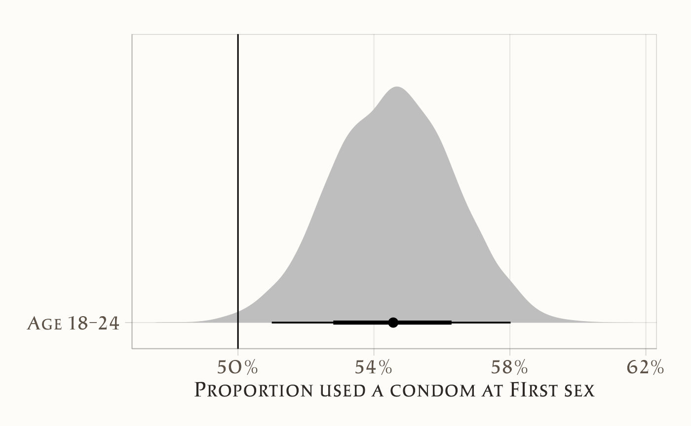
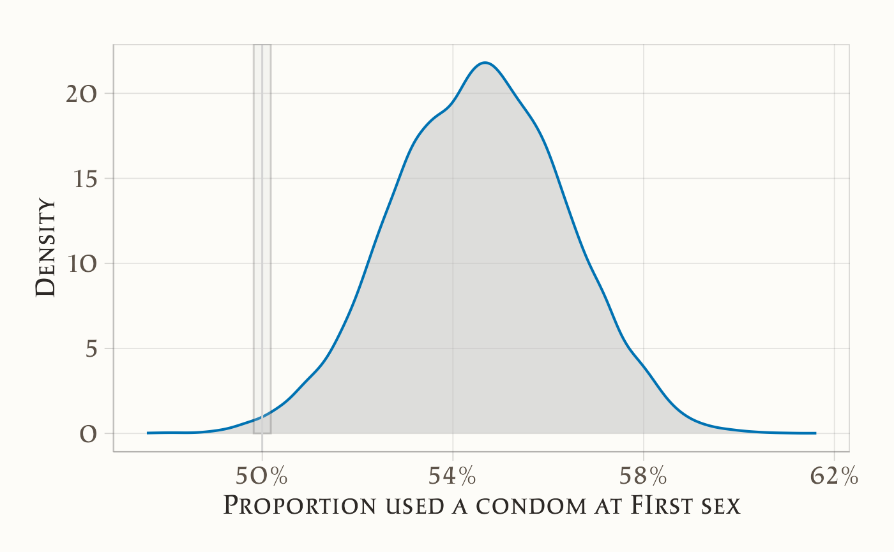
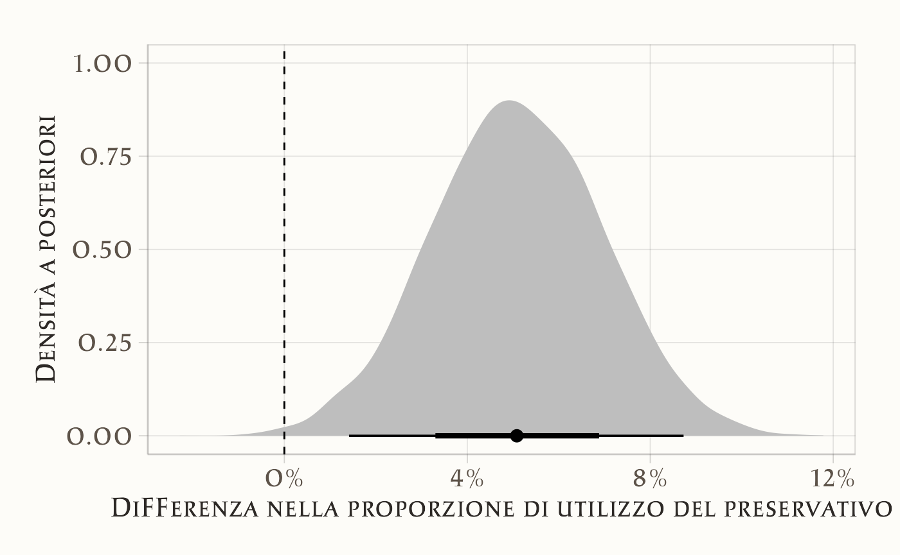

here::here("code", "_common.R") |>
source()
# Load packages
if (!requireNamespace("pacman")) install.packages("pacman")
pacman::p_load(cmdstanr, posterior, bayestestR, brms, tidyr, broom, tidybayes, scales)37 Inferenza sulle proporzioni
“Not everything that counts can be counted, and not everything that can be counted counts.”
– Spesso attribuita a William Bruce Cameron o Albert Einstein
Introduzione
Dopo aver affrontato il problema dell’inferenza sulle medie, ci spostiamo ora a un altro scenario molto comune nella ricerca psicologica: l’analisi delle proporzioni. Capita spesso di voler confrontare la frequenza relativa di un certo evento tra due gruppi indipendenti. Per esempio, possiamo chiederci se la proporzione di soggetti che rispondono correttamente a un item sia più alta in un gruppo sperimentale rispetto a un gruppo di controllo, oppure se la proporzione di persone che presentano un sintomo clinico differisca tra due popolazioni.
Come nel caso delle medie, anche qui il confronto diretto tra le proporzioni osservate può essere fuorviante, perché le differenze nei dati sono sempre accompagnate da variabilità casuale. Per interpretarle correttamente è necessario formulare un modello statistico che tenga conto dell’incertezza.
L’approccio tradizionale è quello frequentista, che utilizza un test di ipotesi con l’ipotesi nulla di uguaglianza tra le proporzioni. Questo metodo, tuttavia, si limita a stabilire se i dati sono compatibili o meno con l’assenza di differenze, senza dirci nulla sull’ampiezza e sull’importanza sostantiva delle differenze stesse.
L’approccio bayesiano rovescia la prospettiva. Non si tratta solo di stabilire se due proporzioni siano uguali o diverse, ma di stimare quanto siano differenti e con quale grado di incertezza. Questo significa ottenere una distribuzione a posteriori per la differenza tra proporzioni, da cui derivare probabilità direttamente interpretabili, come la probabilità che una proporzione sia maggiore dell’altra o che la differenza superi una soglia di rilevanza pratica. In questo modo, l’analisi diventa più informativa e più utile per supportare decisioni scientifiche.
In questo capitolo introdurremo dunque l’inferenza bayesiana sulle proporzioni, utilizzando il pacchetto brms in R. Per rendere il percorso graduale, partiremo dal caso più semplice dell’inferenza su una singola proporzione, per poi estendere i concetti al confronto tra due gruppi. Questo ci permetterà di apprezzare sia i limiti dell’approccio frequentista sia i vantaggi di quello bayesiano, che ci restituisce una descrizione completa della nostra incertezza.
Panoramica del capitolo
- Fondamenti dell’inferenza su una proporzione (modello Beta-Binomiale).
- Confronto tra l’approccio frequentista (test e intervalli di confidenza) con quello bayesiano.
- Concetto di ROPE per valutare la significatività pratica, e non solo statistica, di un effetto.
- Estensione al confronto tra due proporzioni.
- Linee guida per la reportistica e la pianificazione.
37.1 Inferenza su una proporzione
Come esempio per l’inferenza su una proporzione, utilizzeremo i dati dello studio di Brückner & Bearman (2005), discussi anche da Wagenmakers et al. (2010). Nell’articolo After the promise: the STD consequences of adolescent virginity pledges, Brückner & Bearman (2005) analizzano una serie di interviste condotte nell’ambito del National Longitudinal Study of Adolescent Health (Add Health). Lo studio si concentra sul comportamento sessuale di adolescenti, di età compresa tra 18 e 24 anni, che hanno fatto un “virginity pledge”, ovvero una promessa pubblica o scritta di rimanere vergini fino al matrimonio. Studi scientifici indicano che il comportamento sessuale di questi adolescenti non sia statisticamente diverso da quello di chi non ha fatto tale promessa, con l’unica eccezione che i “pledgers” hanno una minore probabilità di utilizzare il preservativo durante il primo rapporto sessuale.
I dati rilevanti per la nostra analisi sono i seguenti:
- su 777 adolescenti che hanno fatto il “virginity pledge”, 424 (54.6%) hanno dichiarato di aver usato il preservativo durante il primo rapporto sessuale;
- su 9072 adolescenti che non hanno fatto la promessa, 5416 (59.7%) hanno dichiarato di aver usato il preservativo.
37.1.1 Obiettivo dell’analisi
Nella prima analisi, ci concentreremo sul campione di adolescenti che hanno fatto il “virginity pledge”. Ci chiediamo se sia credibile pensare che questi adolescenti tendano ad avere un rapporto protetto, nel loro primo rapporto sessuale, in una proporzione minore di quella che ci si potrebbe aspettare in caso di casualità (ovvero, una proporzione di 0.5).
37.1.2 Analisi frequentista
Iniziamo con un test frequentista usando la funzione prop.test() per confrontare la proporzione osservata con il valore di riferimento 0.5.
prop_test_freq_vol <- prop.test(
x = 424,
n = 777,
p = 0.5
)
tidy(prop_test_freq_vol)
#> # A tibble: 1 × 8
#> estimate statistic p.value parameter conf.low conf.high
#> <dbl> <dbl> <dbl> <int> <dbl> <dbl>
#> 1 0.546 6.31 0.0120 1 0.510 0.581
#> method alternative
#> <chr> <chr>
#> 1 1-sample proportions test with continuity correction two.sidedL’intervallo di confidenza frequentista non include il valore di riferimento 0.5, quindi, in base a questa analisi, possiamo concludere che la proporzione osservata (0.546) sia maggiore del valore atteso in caso di casualità (0.5).
37.1.3 Approccio bayesiano
Se utilizziamo dei prior non informativi, ci aspettiamo di giungere alla stessa conclusione anche con un approccio bayesiano. Tuttavia, l’approccio bayesiano ci permette di ottenere una distribuzione completa della probabilità a posteriori del parametro di interesse, offrendo una visione più ricca e flessibile rispetto all’approccio frequentista.
Iniziamo creando un data frame che sarà utilizzato con la funzione brm().
pledge_binomial_df <- tibble(
n_yes = 424,
n_total = 777
)
# tiny data
pledge_binomial_df
#> # A tibble: 1 × 2
#> n_yes n_total
#> <dbl> <dbl>
#> 1 424 77737.1.3.1 Modello bayesiano
Utilizziamo un modello di regressione con una funzione link binomiale. Questo significa che stimeremo la proporzione \(p\) con un modello di regressione beta-binomiale bayesiano utilizzando brms. Useremo un prior non informativo \(\mathcal{Beta}(1, 1)\). Questo è un modello solo con intercetta, senza altre covariate, poiché siamo interessati solo alla proporzione sottostante, senza condizionarla su altre variabili.
Il modello può essere rappresentato come segue:
\[ \begin{aligned} y_{\text{condom\_use}} &\sim \mathcal{Binomial}(n, \pi) \\ \pi &= \beta_0 \\ \beta_0 &\sim \mathcal{Beta}(1, 1) \end{aligned} \]
Eseguiamo l’analisi bayesiana.
Poiché questo è un modello di regressione, si comporta come qualsiasi altro modello brms. Il coefficiente per l’intercetta rappresenta la proporzione stimata di adolescenti tra i 18 e i 24 anni che hanno usato il preservativo durante il primo rapporto sessuale nel campione.
summary(model_pledge_binomial)
#> Family: binomial
#> Links: mu = identity
#> Formula: n_yes | trials(n_total) ~ 1
#> Data: pledge_binomial_df (Number of observations: 1)
#> Draws: 4 chains, each with iter = 4000; warmup = 1000; thin = 1;
#> total post-warmup draws = 12000
#>
#> Regression Coefficients:
#> Estimate Est.Error l-95% CI u-95% CI Rhat Bulk_ESS Tail_ESS
#> Intercept 0.55 0.02 0.51 0.58 1.00 3835 5744
#>
#> Draws were sampled using sample(hmc). For each parameter, Bulk_ESS
#> and Tail_ESS are effective sample size measures, and Rhat is the potential
#> scale reduction factor on split chains (at convergence, Rhat = 1).Si noti come l’intervallo di credibilità al 95% riproduce l’intervallo frequentista calcolato in precedenza.
37.1.4 Confronto tra i due approcci
Confrontiamo ora i risultati ottenuti dai due approcci. L’analisi frequentista ha mostrato che la proporzione osservata (0.546) è significativamente maggiore del valore di riferimento 0.5. L’approccio bayesiano conferma questa conclusione, fornendo una distribuzione completa della probabilità a posteriori per la proporzione π. Uno dei vantaggi dell’approccio bayesiano è la possibilità di incorporare informazioni a priori, se disponibili, migliorando così la robustezza delle inferenze. Inoltre, l’intervallo di credibilità bayesiano fornisce una descrizione più completa della distribuzione dei parametri, consentendo una migliore interpretazione dei risultati.
37.1.5 Modello Beta-Binomiale e soluzione analitica
In questo contesto, il problema può essere modellato utilizzando una distribuzione beta-binomiale, per la quale esiste una soluzione analitica per la distribuzione a posteriori. Il modello beta-binomiale è particolarmente adatto quando si lavora con dati binomiali (ad esempio, successi e fallimenti) e si desidera incorporare una distribuzione a priori coniugata per la proporzione \(p\).
37.1.5.1 Contestualizzazione del modello
Per il gruppo “pledgers”, abbiamo \(y_1\) successi su \(n_1\) prove. Se assumiamo una distribuzione a priori Beta(\(\alpha\), \(\beta\)), la distribuzione a posteriori per la proporzione \(p_1\) sarà anch’essa una distribuzione Beta, data da:
\[ p_1 \mid y_1, n_1 \sim \mathcal{Beta}(\alpha + y_1, \beta + n_1 - y_1). \]
Nel nostro caso specifico, scegliamo una prior non informativa \(\mathcal{Beta}(1, 1)\), che equivale a una distribuzione uniforme sull’intervallo [0, 1]. Questa scelta riflette l’assenza di informazioni pregresse sulla proporzione \(p_1\). Pertanto, la distribuzione a posteriori per il gruppo “pledgers” diventa:
\[ p_1 \mid y_1, n_1 \sim \mathcal{Beta}(1 + 424, 1 + 777 - 424) = \mathcal{Beta}(425, 354). \]
37.1.5.2 Calcolo dell’intervallo di credibilità
Utilizziamo R per calcolare l’intervallo di credibilità al 95% basato sulla distribuzione a posteriori derivata analiticamente.
Il risultato ottenuto dall’analisi bayesiana analitica replica quello ottenuto tramite il modello brm() implementato in precedenza. Questo confronto tra approcci dimostra la coerenza tra le tecniche frequentista, bayesiana numerica e bayesiana analitica.
37.1.6 Discussione e confronto tra approcci
L’utilizzo della distribuzione beta-binomiale e della soluzione analitica offre diversi vantaggi:
-
Semplicità: La soluzione analitica è spesso più semplice da implementare rispetto ai metodi numerici, come quelli utilizzati in
brms. - Velocità: I calcoli sono generalmente più veloci poiché non richiedono iterazioni o campionamenti.
- Interpretazione: L’uso di distribuzioni coniugate facilita l’interpretazione dei risultati, fornendo direttamente la distribuzione a posteriori senza bisogno di complessi algoritmi di inferenza.
Tuttavia, l’approccio bayesiano numerico tramite brms presenta anche vantaggi significativi:
- Flessibilità: Può gestire modelli più complessi e includere covariate multiple.
- Priori informativi: Permette di incorporare facilmente informazioni a priori, se disponibili.
- Estensioni: Facilita l’estensione del modello a casi più complessi, come il confronto tra proporzioni di due gruppi.
37.1.6.1 Analisi della distribuzione a posteriori
Essendo un’analisi bayesiana, possiamo lavorare con l’intera distribuzione a posteriori e calcolare direttamente l’estimando, come la differenza tra la proporzione campionaria e la proporzione di riferimento (0.5).
pledge_draws <- model_pledge_binomial |>
spread_draws(b_Intercept) |>
mutate(diff = b_Intercept - 0.5)Visualizziamo la distribuzione a posteriori della proporzione.
p1 <- ggplot(pledge_draws, aes(x = b_Intercept, y = "Age 18–24")) +
stat_halfeye(fill = "gray") +
geom_vline(xintercept = 0.5) +
scale_x_continuous(labels = label_percent()) +
coord_cartesian(ylim = c(1.5, 1.5)) +
labs(x = "Proportion used a condom at first sex", y = NULL)
p1
Il valore di riferimento (0.5) non è incluso nella distribuzione a posteriori, il che significa che la differenza tra la proporzione campionaria e la proporzione di riferimento non include lo zero, con un livello di credibilità del 95%. Possiamo quindi concludere, con un livello soggettivo di credibilità del 95%, che l’uso del preservativo durante il primo rapporto sessuale sia maggiore del caso, per gli adolescenti che hanno fatto il “virginity pledge”.
37.1.7 La regione di equivalenza pratica
L’analisi precedente confronta la proporzione osservata con un singolo valore di riferimento (0.5). Un approccio alternativo è considerare un intervallo di valori attorno a 0.5 che possano essere considerati “praticamente equivalenti” al valore di riferimento. Questo intervallo è chiamato Regione di Equivalenza Pratica (ROPE).
Secondo Kruschke & Liddell (2018), la ROPE può essere definita come un intervallo attorno al valore nullo (baseline) che corrisponde a un decimo della deviazione standard della distribuzione a posteriori del parametro di interesse. Nel nostro caso, il parametro di interesse è la proporzione \(p\), e il valore nullo è 0.5. Per calcolare la ROPE, estraiamo i campioni a posteriori dal modello.
posterior_samples <- as_draws_df(model_pledge_binomial)Calcoliamo la deviazione standard a posteriori di \(p\).
posterior_std_dev <- sd(posterior_samples$b_Intercept)
posterior_std_dev
#> [1] 0.018Definiamo la ROPE come un intervallo attorno al valore di riferimento 0.5.
baseline <- 0.5 # Valore nullo (baseline)
rope_low <- baseline - 0.1 * posterior_std_dev
rope_high <- baseline + 0.1 * posterior_std_devCalcoliamo ora la probabilità che la proporzione \(p\) si trovi all’interno della ROPE.
rope_probability <-
mean(
posterior_samples$b_Intercept >= rope_low &
posterior_samples$b_Intercept <= rope_high
)
rope_probability
#> [1] 0.003Visualizziamo la distribuzione a posteriori di \(p\) insieme alla ROPE.
ggplot(posterior_samples, aes(x = b_Intercept)) +
geom_density(fill = "gray", alpha = 0.5) +
annotate(
geom = "rect",
xmin = rope_low,
xmax = rope_high,
ymin = 0, ymax = Inf,
fill = "lightgray", alpha = 0.2
) +
geom_vline(xintercept = baseline, color = "lightgray") +
scale_x_continuous(labels = scales::percent) +
labs(x = "Proportion used a condom at first sex", y = "Density")
In conclusione, dato che solo lo 0.325% (meno dell’uno per cento) della distribuzione a posteriori di \(p\) si trova nella ROPE, possiamo concludere che ci sono evidenze credibili che la distribuzione a posteriori del parametro \(p\) (la proporzione di adolescenti, di età compresa tra 18 e 24 anni, che hanno fatto il “virginity pledge” e hanno usato il preservativo durante il primo rapporto sessuale) sia diversa dal valore di riferimento 0.5. Nel caso specifico, questa proporzione è più alta, indicando che la tendenza ad avere un rapporto protetto è maggiore rispetto al caso di casualità, per questa popolazione.
37.1.7.1 Discussione
L’utilizzo della ROPE offre una prospettiva aggiuntiva nell’interpretazione delle inferenze bayesiane. Invece di semplicemente determinare se un parametro è statisticamente significativo rispetto a un valore di riferimento, la ROPE permette di valutare se le differenze osservate siano praticamente rilevanti in termini di impatto reale.
- Soglia di rilevanza: L’impostazione di una ROPE consente di stabilire una soglia di rilevanza pratica. Se la maggior parte della distribuzione a posteriori cade al di fuori della ROPE, possiamo concludere che la differenza è non solo statistica ma anche pratica.
- Interpretazione clinica: Nelle applicazioni pratiche, come in ambito medico o sociale, la ROPE aiuta a distinguere tra risultati statisticamente significativi ma clinicamente insignificanti e quelli che hanno un impatto rilevante.
Nel contesto dello studio sui “pledgers”, l’uso della ROPE fornisce una valutazione più completa della tendenza degli adolescenti a utilizzare il preservativo durante il primo rapporto sessuale, dimostrando che questa tendenza è non solo statisticamente diversa dal caso di casualità, ma anche significativa dal punto di vista pratico.
37.2 Inferenza sulla differenza tra due proporzioni
Estendiamo ora l’analisi precedente per confrontare le proporzioni di due gruppi, un compito per il quale non esiste una soluzione analitica semplice. Nello studio in esame, ci poniamo la domanda: Fino a che punto l’analisi statistica supporta l’ipotesi che i “pledgers” abbiano una minore probabilità rispetto ai “non-pledgers” di usare il preservativo durante il primo rapporto sessuale?
Per testare questa ipotesi utilizzando brms, estendiamo il modello bayesiano includendo due gruppi: i pledgers (che hanno fatto il voto di astinenza) e i non-pledgers (che non lo hanno fatto). L’obiettivo è stimare la differenza tra le due proporzioni e valutare se questa sia credibilmente diversa da zero.
Costruiamo un tibble con i dati relativi ai due gruppi:
pledge_data <- tibble(
group = c("pledgers", "nonpledgers"),
n_yes = c(424, 5416), # Numero di partecipanti che hanno usato il preservativo
n_total = c(777, 9072) # Totale dei partecipanti per ciascun gruppo
)
print(pledge_data)
#> # A tibble: 2 × 3
#> group n_yes n_total
#> <chr> <dbl> <dbl>
#> 1 pledgers 424 777
#> 2 nonpledgers 5416 907237.2.1 Modello bayesiano per il confronto tra proporzioni
In questo modello, adottiamo un approccio bayesiano per analizzare la differenza nell’utilizzo del preservativo tra due gruppi distinti: i “pledgers” (chi ha sottoscritto l’impegno) e i “non-pledgers” (chi non lo ha sottoscritto). La struttura del modello si basa sulla distribuzione binomiale, appropriata per dati che rappresentano conteggi di successi su un numero fisso di prove.
Specifica del modello. Il modello assume che il numero di utilizzi del preservativo in ciascun gruppo segua una distribuzione binomiale:
\[ y_i \sim \text{Binomial}(n_i, \theta_i) \] dove:
- \(y_i\) è il numero di utilizzi del preservativo nel gruppo \(i\),
- \(n_i\) è il numero totale di individui nel gruppo \(i\),
- \(\theta_i\) è la probabilità di utilizzo del preservativo nel gruppo \(i\).
Modellazione delle probabilità. La relazione tra i gruppi viene modellata attraverso una specificazione lineare sulla probabilità stessa (utilizzando un link identità):
\[ \theta_i = \beta_0 + \beta_1 \cdot x_i, \] dove:
- \(x_i\) è una variabile indicatrice che vale 0 per i non-pledgers e 1 per i pledgers,
- \(\beta_0\) rappresenta la probabilità di utilizzo del preservativo nel gruppo di riferimento (non-pledgers),
- \(\beta_1\) rappresenta la differenza assoluta nella probabilità di utilizzo tra pledgers e non-pledgers.
Scelta dei prior. La specificazione dei prior riflette le nostre conoscenze a priori sui parametri:
- Per \(\beta_0\) (probabilità base nei non-pledgers): utilizziamo un prior Beta(1,1), equivalente a una distribuzione uniforme tra 0 e 1, che rappresenta un’assenza di informazioni specifiche sulla probabilità attesa
- Per \(\beta_1\) (differenza tra gruppi): utilizziamo un prior normale con media 0 e deviazione standard 1, che assegna probabilità decrescenti a differenze maggiori in valore assoluto, pur mantenendo la possibilità di effetti in entrambe le direzioni
Implementazione pratica. L’implementazione del modello in brms utilizza la seguente sintassi:
model_pledge_diff <- brm(
formula = n_yes | trials(n_total) ~ group, # Specifica della risposta binomiale
data = pledge_data, # Dataset contenente i dati
family = binomial(link = "identity"), # Link identità per interpretazione diretta
prior = c(
prior(beta(1, 1), class = "Intercept", lb = 0, ub = 1), # Prior per la probabilità base
prior(normal(0, 1), class = "b") # Prior per l'effetto del gruppo
),
chains = 4, # Quattro catene Markoviane
warmup = 1000, # 1000 iterazioni di burn-in per catena
iter = 4000, # 4000 iterazioni totali per catena
seed = 123, # Seed per riproducibilità
refresh = 0, # Nessun output intermedio
backend = "cmdstanr" # Motore di inferenza efficiente
)37.2.2 Risultati
Esaminiamo il sommario del modello per valutare la stima della differenza tra le proporzioni:
summary(model_pledge_diff)
#> Family: binomial
#> Links: mu = identity
#> Formula: n_yes | trials(n_total) ~ group
#> Data: pledge_data (Number of observations: 2)
#> Draws: 4 chains, each with iter = 4000; warmup = 1000; thin = 1;
#> total post-warmup draws = 12000
#>
#> Regression Coefficients:
#> Estimate Est.Error l-95% CI u-95% CI Rhat Bulk_ESS Tail_ESS
#> Intercept 0.60 0.01 0.59 0.61 1.00 13571 9174
#> grouppledgers -0.05 0.02 -0.09 -0.01 1.00 3602 4230
#>
#> Draws were sampled using sample(hmc). For each parameter, Bulk_ESS
#> and Tail_ESS are effective sample size measures, and Rhat is the potential
#> scale reduction factor on split chains (at convergence, Rhat = 1).Per interpretare meglio i risultati, estraiamo i campioni a posteriori per la differenza tra le due proporzioni:
pledge_diff_draws <- model_pledge_diff |>
spread_draws(b_Intercept, b_grouppledgers) |>
mutate(
nonpledgers_prop = b_Intercept, # Stima della proporzione nei non-pledgers
pledgers_prop = b_Intercept + b_grouppledgers, # Stima della proporzione nei pledgers
diff = nonpledgers_prop - pledgers_prop # Differenza tra le due proporzioni
)Visualizziamo la distribuzione a posteriori della differenza:
p3 <- ggplot(pledge_diff_draws, aes(x = diff)) +
stat_halfeye(fill = "gray") +
geom_vline(xintercept = 0, linetype = "dashed") +
scale_x_continuous(labels = label_percent()) +
labs(x = "Differenza nella proporzione di utilizzo del preservativo",
y = "Densità a posteriori")
print(p3)
Calcoliamo la probabilità che la differenza tra le proporzioni sia maggiore di zero:
37.2.2.1 Interpretazione
La probabilità calcolata è 0.997; ciò significa che c’è una probabilità del 99.7% che la proporzione di non-pledgers che usano il preservativo sia maggiore rispetto a quella dei pledgers. Questo supporta con elevata credibilità l’ipotesi che i pledgers abbiano meno probabilità di utilizzare il preservativo durante il primo rapporto sessuale.
Possiamo quindi concludere che la differenza tra le due proporzioni è credibilmente diversa da zero, con un’elevata probabilità a favore dell’ipotesi che i pledgers abbiano una minore propensione all’uso del preservativo rispetto ai non-pledgers. Questi risultati riproducono quelli riportati dalla letteratura precedente, come discusso da Brückner & Bearman (2005).
Riflessioni conclusive
In questo capitolo abbiamo visto come il problema del confronto tra proporzioni possa essere affrontato sia con l’approccio frequentista tradizionale, basato sui test di ipotesi, sia con l’approccio bayesiano. La differenza non è soltanto tecnica: il frequentismo ci dice se i dati sono compatibili o meno con l’ipotesi nulla di uguaglianza, mentre il bayesianesimo ci fornisce una distribuzione a posteriori per la differenza tra proporzioni, che quantifica direttamente la nostra incertezza e ci permette di calcolare probabilità interpretabili, come la probabilità che una proporzione superi l’altra o che la differenza abbia un’ampiezza rilevante.
Abbiamo anche sottolineato l’importanza di iniziare dall’inferenza su una singola proporzione: questo passaggio preliminare ci ha permesso di familiarizzare con la logica bayesiana in un contesto semplice, prima di affrontare il caso più generale del confronto tra gruppi. L’uso di brms ha reso l’implementazione accessibile, mostrando come strumenti moderni consentano di stimare modelli complessi mantenendo intatta la logica concettuale dell’aggiornamento bayesiano.
Dal punto di vista psicologico, il messaggio è chiaro: non basta sapere se due proporzioni sono “significativamente diverse”. Dobbiamo chiederci quanto differiscono, quanto siamo incerti su questa differenza, e se l’effetto osservato abbia un senso pratico e teorico. Solo così l’analisi statistica può davvero informare le nostre decisioni scientifiche.
Nel prosieguo vedremo come lo stesso principio si applichi a una gamma più ampia di modelli all’interno della famiglia dei GLM: che si tratti di proporzioni, conteggi o esiti multinomiali, l’approccio bayesiano ci offre sempre una rappresentazione trasparente dell’incertezza e un linguaggio unificato per affrontare dati di natura diversa.
Bibliografia
Albert, J., & Hu, J. (2019). Probability and Bayesian Modeling. CRC Press.
Brückner, H., & Bearman, P. (2005). After the promise: The STD consequences of adolescent virginity pledges. Journal of Adolescent Health, 36(4), 271–278.
Kruschke, J. K., & Liddell, T. M. (2018). Bayesian data analysis for newcomers. Psychonomic Bulletin & Review, 25(1), 155–177.
Wagenmakers, E.-J., Lodewyckx, T., Kuriyal, H., & Grasman, R. (2010). Bayesian hypothesis testing for psychologists: A tutorial on the Savage–Dickey method. Cognitive Psychology, 60(3), 158–189.